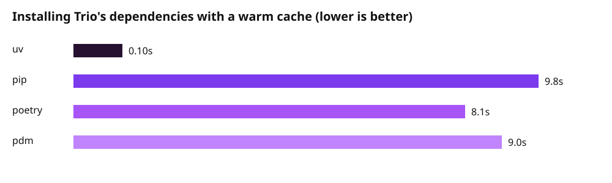

uv
An extremely fast Python package and project manager, written in Rust.

Installing Trio's dependencies with a warm cache.
Highlights
- A single tool to replace
pip, pip-tools, pipx, poetry, pyenv, twine, virtualenv, and more.
- 10-100x faster than
pip.
- Provides comprehensive project management, with a universal lockfile.
- Runs scripts, with support for inline dependency metadata.
- Installs and manages Python versions.
- Runs and installs tools published as Python packages.